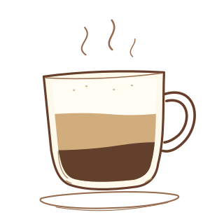

Coffee basics
See how pressure, gravity, and time change the way coffee is brewed.
Find out what goes into your favorite coffee drinks, how they’re made, and how they’re served around the world.
Compare the drinksInside a cappuccino

See how pressure, gravity, and time change the way coffee is brewed.
Compare what’s in a latte, cappuccino, Americano, and macchiato.
Learn the differences between iced coffee, cold brew, and a frappé.
Explore three coffee traditions from Vietnam, Turkey, and Italy.